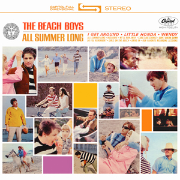
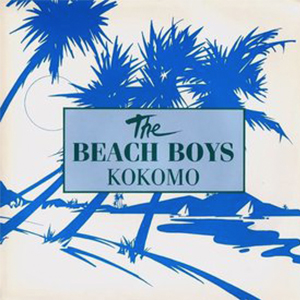
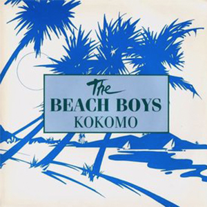
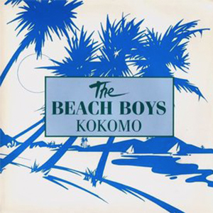

The Beach Boys
This image was meant for media use, found on the Beach Boys official website.
The Beach Boys were an American rock band. They formed in 1961 and maintained popularity throughout the mid- and late 1900s. Originally a 5 member group, the band saw lineup changes throughout its career. They were renowned for a chill, psychadelic beach sound utilized in many films during their peak popularity and to this day. Check out some of their greatest hits below!

 


All Summer Long (1964)
God Only Knows (1966)
Kokomo (1988)
Surfer Girl (1963)